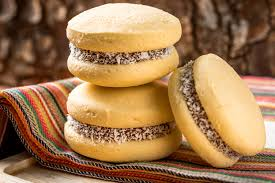
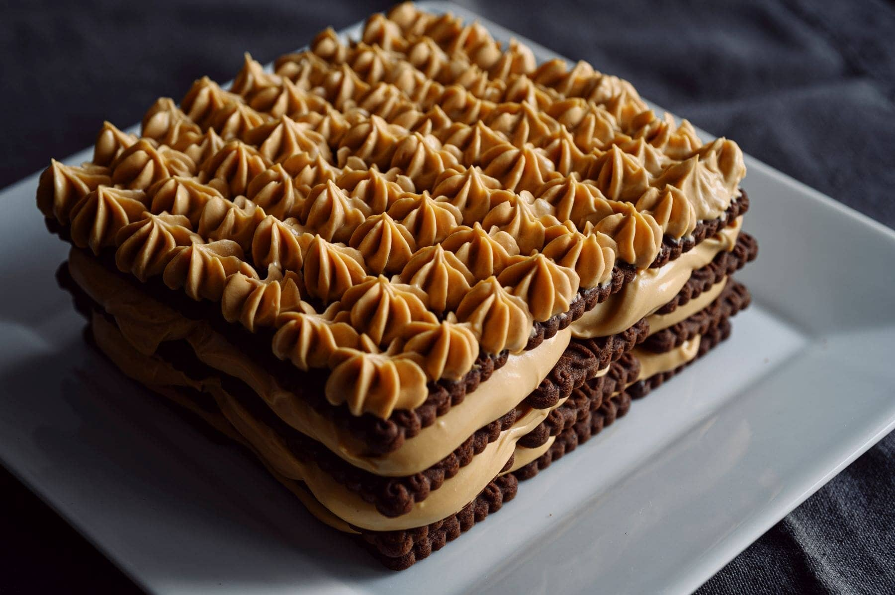

Comidas Argentinas
Bem-vindo ao nosso espaço de sabores argentinos!
A culinária da Argentina é conhecida por unir tradição, simplicidade e muito sabor. Aqui você vai encontrar receitas típicas que atravessaram gerações e conquistaram paladares ao redor do mundo.
Da empanada recheada e cheia de histórias, passando pela irresistível chocotorta, até chegar ao clássico alfajor de maizena, cada prato traz um pedacinho da cultura portenha para mais perto de você.
Prepare-se para descobrir aromas, aprender segredos e se apaixonar pela riqueza gastronômica de nossos hermanos!
Empanadas
As empanadas argentinas são uma espécie de “pastel assado” ou frito, muito tradicionais na Argentina e também em países vizinhos, mas com características próprias dependendo da região.
Na base, são feitas com massa fina (à base de farinha de trigo, água, gordura e sal), recheadas e fechadas com uma dobra típica chamada "repulgue", que é como uma trancinha na borda. Depois, podem ser assadas no forno (mais comum) ou fritas (mais tradicional no norte do país). Você pode assistir essa receita clicando aqui!
Alfajor de Maizena

O alfajor argentino é um doce bem tradicional: dois discos macios (geralmente feitos com amido de milho), recheados com doce de leite e cobertos com chocolate ou polvilhados com açúcar de confeiteiro.
Chocotorta
A beleza da Chocotorta é que é super fácil e rápida de fazer, e não precisa ser assada. Você pode ter uma sobremesa deliciosa feita em poucos minutos. Aqui está uma receita simples para você aproveitar.
